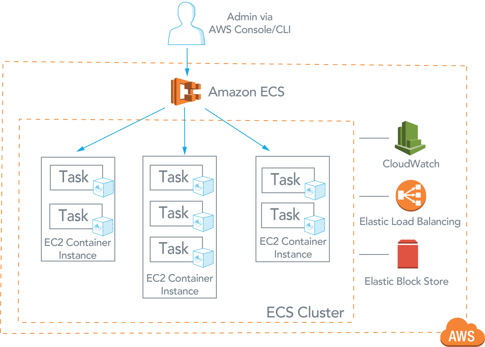
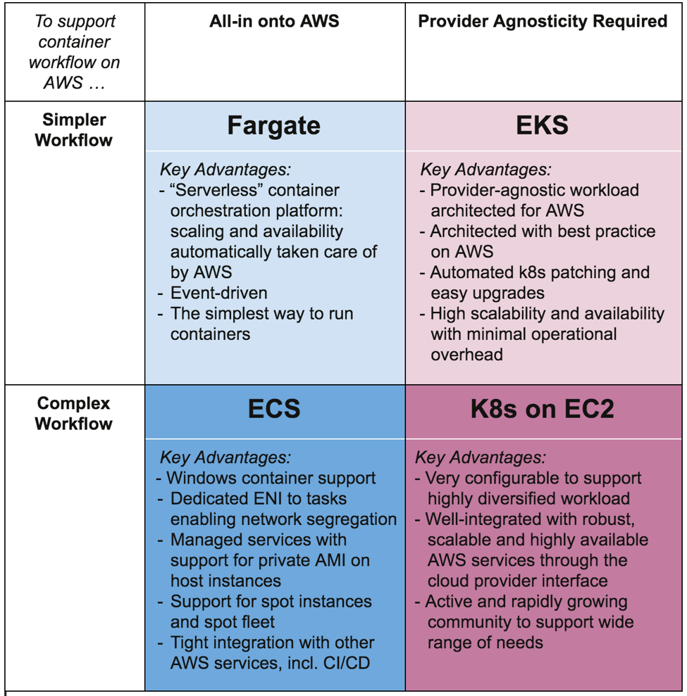
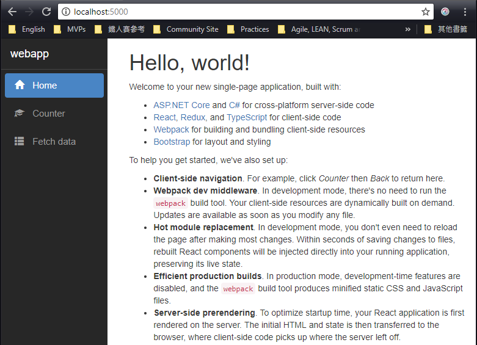
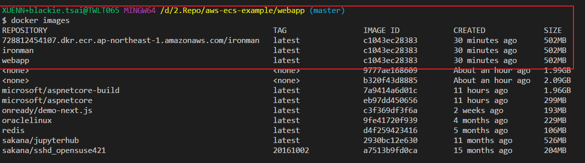
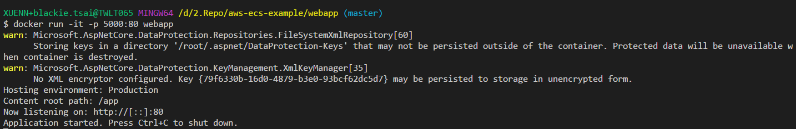
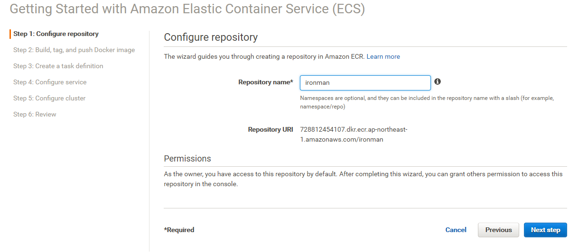
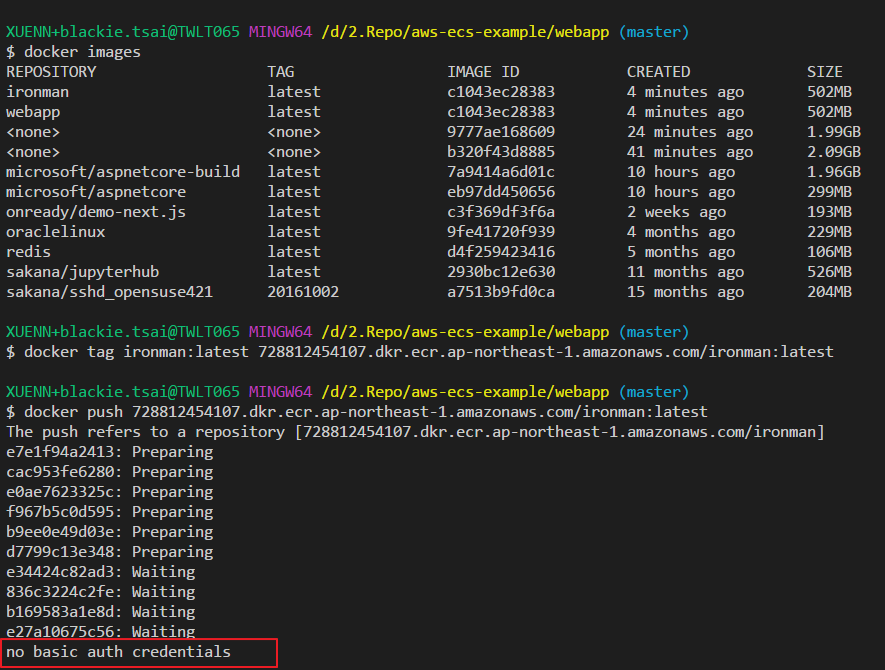
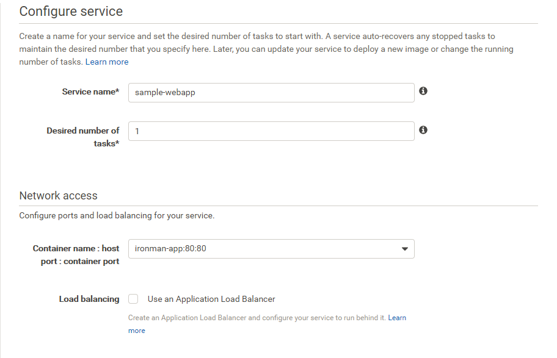
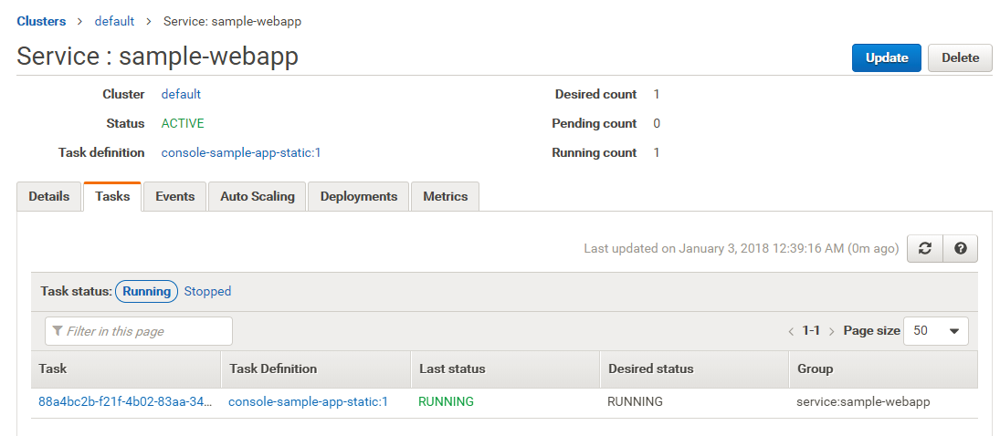

30天鐵人賽介紹 AWS 雲端世界 - 28: AWS 上的容器服務 Elastic Container Service(ECS)
目前容器化開發已經是現代開發環境的新標準，主流的雲端服務分別推出了自身的容器化服務：
- AWS : Amazon EC2 Container Service
- Azure : Azure Container Service
- Google Cloud : Google Container Engine
What is Elastic Container Service
Amazon Elastic Container Service (ECS) 是可高度擴展、高效能的容器(Container)管理服務，可支援 Docker 容器，並讓您在 Amazon EC2 執行個體的受管叢集上輕鬆執行應用程式。使用 ECS 無須另外付費，但要支付為存放和執行應用程式所建立的 AWS 資源 (例如，EC2 執行個體或 EBS 磁碟區) 的費用。

支援四種使用情境:
Task Networking/awsvpc
此模式為每個執行中 ECS 任務指派專用的彈性聯網界面，允許 VPC 中的容器完整聯網功能，就和 EC2 執行個體一樣。
Bridge
此模式會建立 Linux 橋接以連接在本機虛擬網路主機上執行的所有容器，其可透過主機的預設網路連線存取。
Host
此模式直接將容器新增到主機的網路堆疊，在主機的網路上公開容器，沒有隔離。
None
此模式會停用容器的外部聯網。
而目前 ECS 最常拿來與 Kubernetes 比較，而 AWS 上的 Kubernetes 容器服務則是今年 AWS re:Invent 2017 上最新宣佈的服務 Amazon Elastic Container Service for Kubernetes(EKS)。
EKS 服務可以省去安裝以及操作自己的 Kubernetes 叢集的時間，輕鬆的在 AWS 上執行 Kubernetes，使用上千萬不要將兩者搞錯了! 目前這個服務還在 Preview，所以要申請才能用。
另外一個在 AWS re:Invent 2017 上宣佈的是 AWS Fargate，讓你連 Amazon ECS 或是 Amazon EKS 都不用管的服務，直接按照 container 的大小收費。
如何做挑選則可以參考 Choosing your container environment on AWS with ECS, EKS, and Fargate

目前只有 ECS 是穩定版的，所以接下來我們將會介紹如何使用 ECS 並將 .NET Core 2.0 的程式部屬至 ECS 環境中。
Hands on Lab
Create .NET Core Project
接著先確定本機器環境可以執行與運作 .NET Core，並透過以下指令建立一個新的專案
mkdir webapp
cd webapp
dotnet new reactredux
建立好後即可透過以下指令還原套件運行看網站內容：
dotnet restore
npm install
dotnet run

完成後我們即可以透過發佈指令將檔案發佈至 app 資料夾內：
dotnet publish --output D:/2.Repo/aws-ecs-example/webapp/app/ --configuration Release
將檔案準備好後，在至 webapp 資料夾內新增 Dockerfile(抓取 docker container 的映像檔案，參考官方microsoft/aspnetcore-build當前最新版 microsoft/dotnet:2.0.4-sdk-2.1.3-stretch) ：
1 | # Stage 2 |
然後再添加 .dockerignore 檔案:
Sample contents of .dockerignore file
bin/
obj/
node_modules/
接著我們在 webapp 路徑下執行指令建置本機 docker image 檔案，並將其給予標記 ：
docker build -t ironman .
docker tag ironman:latest 728812454107.dkr.ecr.ap-northeast-1.amazonaws.com/ironman:latest

照這邊我們已經將 docker image 準備好了，我們可以透過下面指令在本機運行(跑daemon）：
docker run -d -p 80:80 -t ironman
或是直接運行偵錯都可：
docker run -it -p 80:80 ironman

接著我們回到 AWS Console 網頁去新增服務。
Create ECS instance
首先先登入 [AWS Console] 後在中間的輸入框查詢 Elastic Container Service ，或是透過左上角的 Services 點選到 Compute 下的Elastic Container Service服務：
接著快速建立一個新的實體:

當看到上面資訊後代表我們可以將先前製作好的 docker image 上傳至 ecs 私人資料庫中存放並透過其發佈至正式環境：
接著我們回到 bash 指令環境，透過 aws-cli 登入 ecs，這邊要注意要透過以下指令才可以成功登入：
$(aws ecr get-login --no-include-email --region ap-northeast-1)
將建置好的 docker image 上傳至 ECS 內的 repo 當中：
docker push 728812454107.dkr.ecr.ap-northeast-1.amazonaws.com/ironman:latest
上傳完成就可以在 AWS Console 當中看到：
如果登入失敗就無法上傳：

完成以上步驟後即可至 AWS Console 繼續完成服務建立：

而當服務建立好後即可取得公開連結開啟網站：

完整原始碼請參考aws-ecs-example